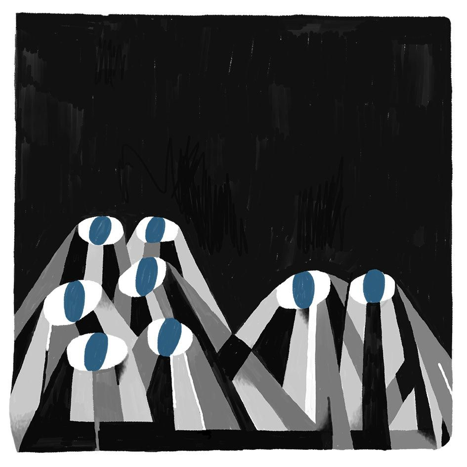
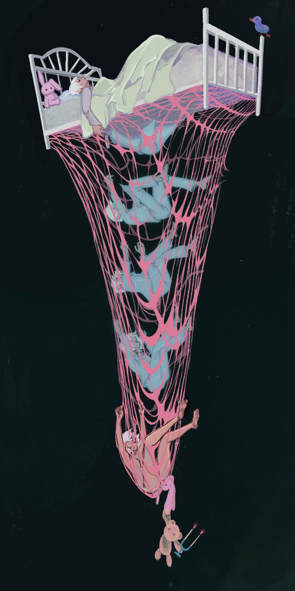

The Night Mind:
Thoughts That Keep Me Awake
At night, my mind refuses to turn off. Even when my body is heavy and tired, my thoughts keep sprinting—replaying moments I wish had gone differently and anticipating conversations that haven’t even happened. It feels like my brain becomes a search engine that never stops loading results.
Racing Thoughts
At night, my mind refuses to turn off. Even when my body is heavy and tired, my thoughts keep sprinting—replaying moments I wish had gone differently, anticipating conversations that haven't even happened. It's as if my brain becomes a search engine that never stops loading results.
The Quiet Isolation
The silence of night isn't peaceful; it's loud. The hum of the refrigerator, the ticking of a clock, the faint glow from the streetlight—they all feel amplified when I am the only one awake. In that stillness, I become hyper-aware of my own existence.

Distorted Time
Minutes blur into hours, hours collapse into seconds. The clock's hands move, yet I feel stuck in a repeating loop—a restless cycle between trying to rest and trying not to think about resting. Insomnia transforms time into something elastic and cruel.
Conversations with Myself
I often find myself thinking about who I am, what I've done, and what I've avoided. The night makes every thought sound more serious, every regret more dramatic, every memory sharper. It's both a confession booth and a mirror I can't look away from.